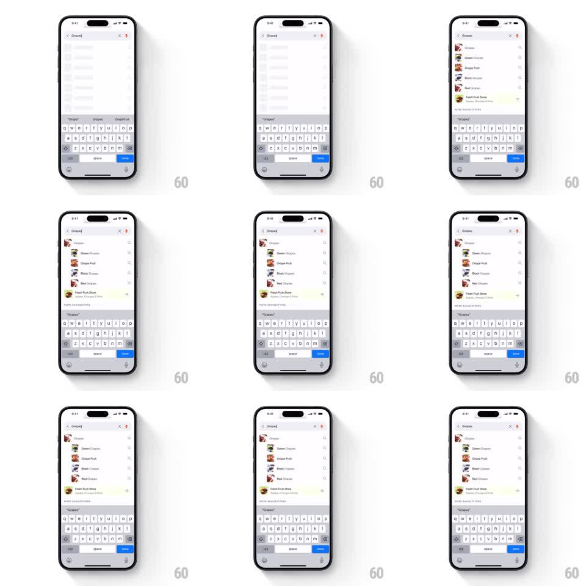

Media
Frame-by-frame

Rebuild this interaction 1:1: Swiggy's search suggestions - skeleton rows flash briefly, then the suggestion list fades and slides up into place under the search bar as results arrive.

Rebuild this interaction 1:1: Swiggy's search suggestions - skeleton rows flash briefly, then the suggestion list fades and slides up into place under the search bar as results arrive. ## Integration Integration: stack-agnostic spec - springs given as stiffness/damping, timed motions as duration + curve; map every value to your framework and animation library of choice. ## Scene Swiggy search screen: back button and active query in the search bar, suggestion rows below (thumbnail, dish name, subtitle), a "More Suggestions" divider, and the keyboard docked at the bottom. ## Motion spec Pattern: skeleton-to-content list entry, ~600ms. - While results load, grey skeleton rows shimmer in the list area (1.2s shimmer sweep looping). - When results arrive, the skeletons crossfade out (150ms) and real rows fade and slide up into place (300ms, 16px rise, ease-out), staggering 50ms per row from the top. - A "More Suggestions" section header slides in after the last row (250ms) with its own small rise. - Typing an additional character re-shows skeletons only if the new query stalls past ~200ms; fast results swap the list with a crossfade instead. - Tapping a row highlights it (light fill flash, 150ms) before navigating. ## Calibration - Rows enter top-down; a bottom-up or random stagger reads as chaos, not arrival. - The keyboard and search bar never move - only the list area animates. ## Reduced motion Skeletons swap to rows instantly; no shimmer. ## Don't miss - Each row's thumbnail pops in a beat after its text (scale 0.8 to 1, 200ms) - text and image never arrive together. - The indent: rows sit slightly inset from the screen edge with the thumbnail leading, and the slide preserves that inset.